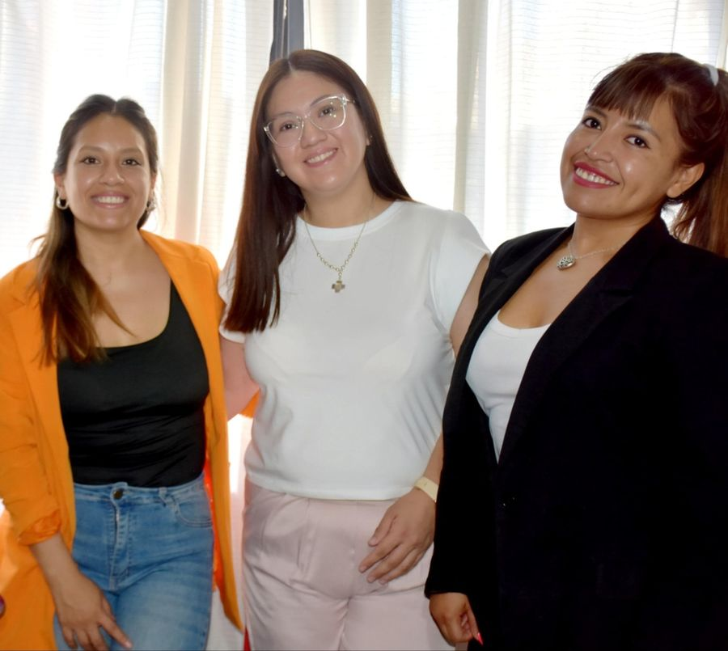
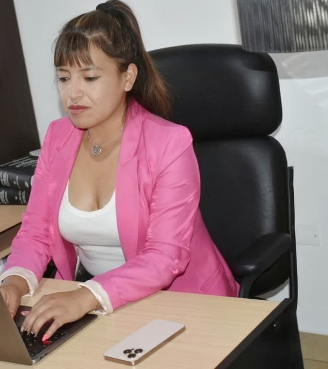

Dra. Fernanda M. Tapia
Lawyer · Professional reg. M.P. 3742
Message Dra. TapiaIf you or your company need something legal done in Jujuy and you are in another country, we can help you from first message to final paperwork.

Business law is our main specialty. We also cover:
Lawyer · Professional reg. M.P. 3742
Message Dra. Tapia
Lawyer · Professional reg. M.P. 3544
Message Dra. Gutiérrez
Lawyer · Professional reg. M.P. 3769
Message Dra. MoralesSan Salvador de Jujuy: Independencia 658, 1st floor, Office 1.
El Carmen: Sarmiento 520, Barrio Centro.
WhatsApp: +54 9 388 478-3935 · asociadosestudiogm@gmail.com